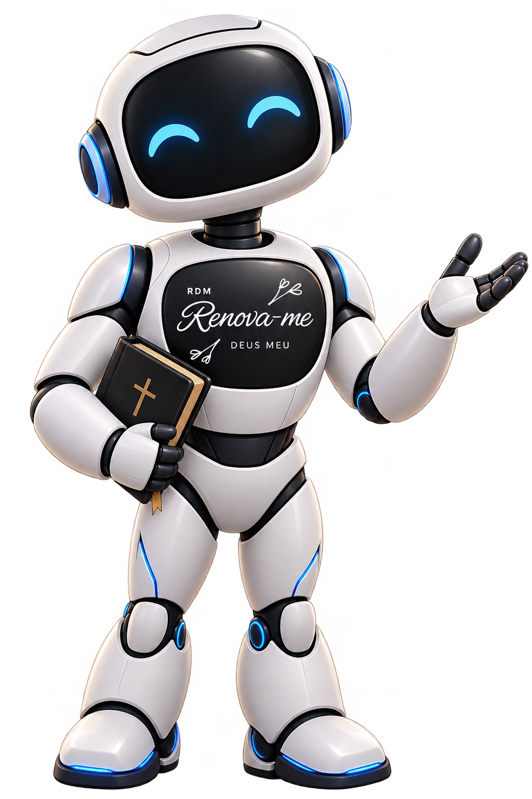
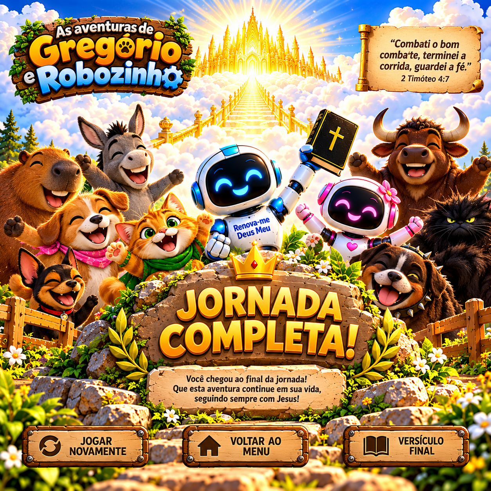

Renova-me: a jornada!
Uma jornada de fé, graça e perseverança.
O início da jornada
“O meu socorro vem do Senhor, que fez o céu e a terra.” Salmo 121:2
Toda jornada tem seus desafios, mas não caminhamos sozinhos. Confie no Senhor, persevere e mantenha os olhos em Cristo. Que esta aventura nos lembre de que o nosso socorro vem de Deus!
Escolha sua fase
Você pode começar por qualquer uma das dez fases.
Como jogar
- Use os controles para movimentar o Robozinho.
- Pule os caixotes e procure as nuvens claras.
- As nuvens claras representam bênçãos no caminho.
- Use a Bíblia para atingir caixas e adormecer as feras.
- Preserve suas vidas e mantenha os olhos em Cristo.
Os comandos definitivos serão ativados durante a implementação dos controles do jogo.
Créditos
Renova-me Deus Meu
Criadores: Rosilene Maria da Silva Oliveira e Ricardo Augusto de Oliveira.
Contato: grupodeusemaior@gmail.com
Jogo pausado
Respire um pouco. Sua jornada espera por você.

Não desista!
Uma tentativa que terminou não encerra sua jornada. Levante-se, confie no Senhor e continue caminhando. A graça de Deus nos ensina a perseverar, mesmo quando enfrentamos dificuldades.
Referência: Provérbios 24:16.

Até aqui o Senhor nos guiou!
Deus, em sua graça, nos concede bênçãos e coloca irmãos ao nosso lado para nos encorajar, ajudar e fortalecer. Não desista diante dos desafios! Busque ao Senhor, confie em sua Palavra e continue caminhando com os olhos em Cristo.
Quando precisar de orientação e crescimento espiritual, visite os materiais do Renova-me Deus Meu.
“O meu socorro vem do Senhor, que fez o céu e a terra.” Salmo 121:2
“Corramos com perseverança a carreira que nos está proposta, olhando firmemente para Jesus.” Hebreus 12:1-2.